Harsh midday city
Bright limestone facades, deep blue sky, hard architectural shadows.
BEFORE · Log 2
AFTER
Apple Log 2 · Standalone Cinematic LUT
One 33-point 3D LUT that turns harsh midday iPhone 17 Pro footage into a warm, dimensional, Mediterranean travel film. It decodes Apple Log 2, handles Apple Wide Gamut and delivers Rec.709 gamma 2.4 in a single step — no conversion LUT in front of it.
Midday sun is flat, blue-ish and unforgiving. This grade rebuilds the warmth the hour never had, without turning the frame yellow. The tint is steered by chroma and hue, not by brightness alone: surfaces that are already warm get richer, while concrete, white linen and cloud stay neutral.
Sunlit stone, skin and foliage take an amber bias. A measured 18 % grey card leaves the LUT at an R/B ratio of 1.09 and a 90 % white at 1.03, so neutrals stay neutral.
Shadows sit at about 0.82× the source luminance for density, with a cool bias that keeps them separated from the sun. Measured deep-shadow area across the eight scenes: 0.67 %.
A hue-selective stage rejects the honey tint in blues and cyans. Sky hue moves +4.5° towards blue, never towards turquoise, at 0.97× the source saturation and 0.99× its luminance.
Skin hue is held to within 1.3° of the source across all eight scenes and every exposure from −2 to +2 EV. No orange cast, no beauty smoothing, no plastic.
Bright footage stays bright, not brighter: the upper quartile lands at 0.95× and the 95th percentile at 0.90× the source, so highlight texture survives.
Because warmth follows chroma rather than luma alone, already-warm light is enriched rather than doubled. Scene 06 is the control case.
Drag each slider. Left is the ungraded Apple Log 2 signal sent
straight to the display; right is the same frame through the delivered
.cube — same source, same framing, same exposure. Tap the
expand icon for full screen.
Bright limestone facades, deep blue sky, hard architectural shadows.
Olive skin under hard overhead sun, white linen, sunlit stone behind.
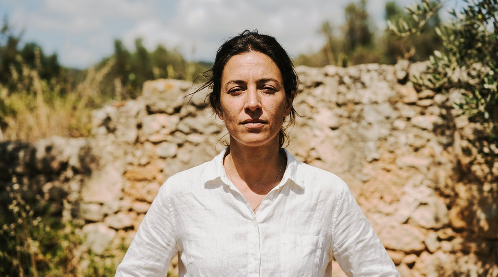
BEFORE · Log 2 AFTERSunlit plaster and open shade in the same frame, terracotta and foliage.
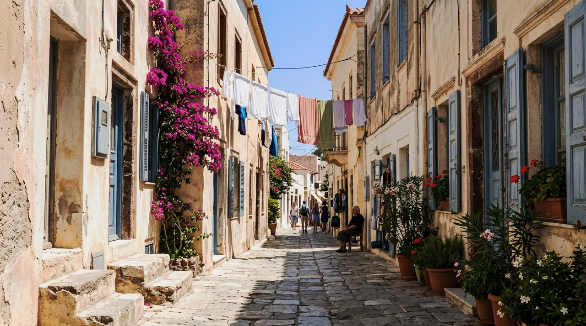
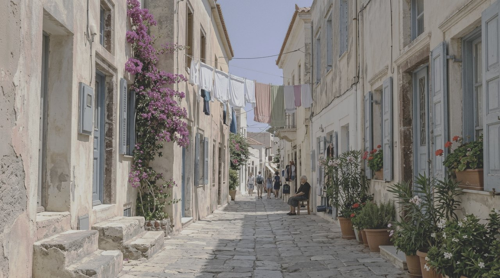
BEFORE · Log 2 AFTERPale sand, specular glare on water, white foam near clipping.
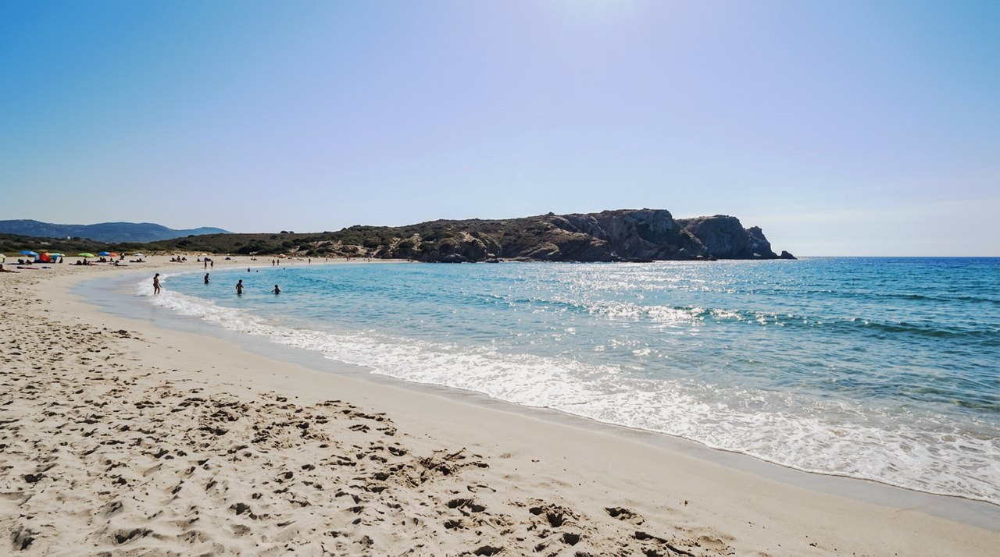
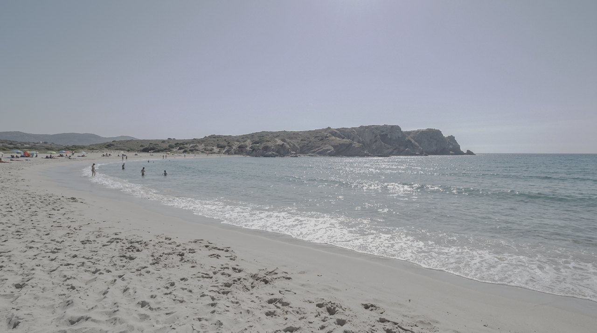
BEFORE · Log 2 AFTERBroad foliage field, distant haze, large clean sky area.
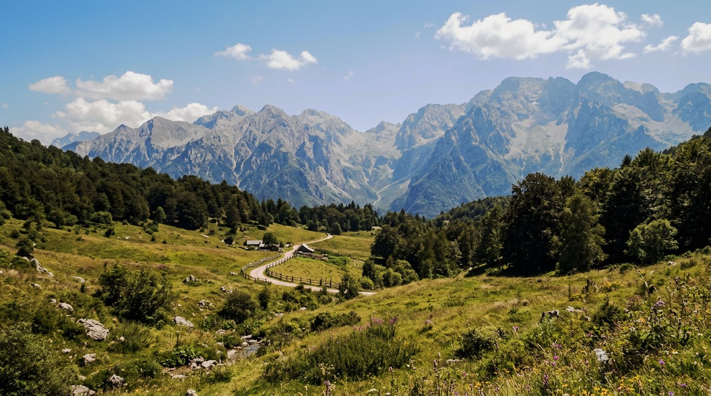
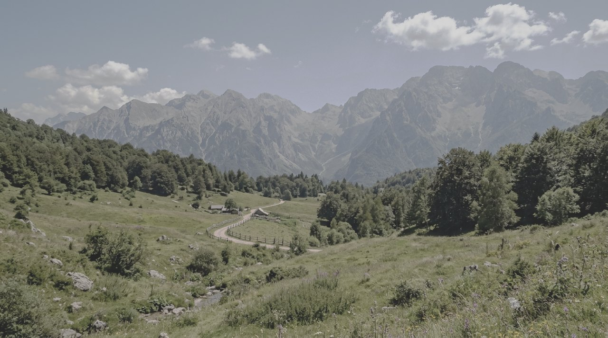
BEFORE · Log 2 AFTERAlready-warm light: the test for over-warming.
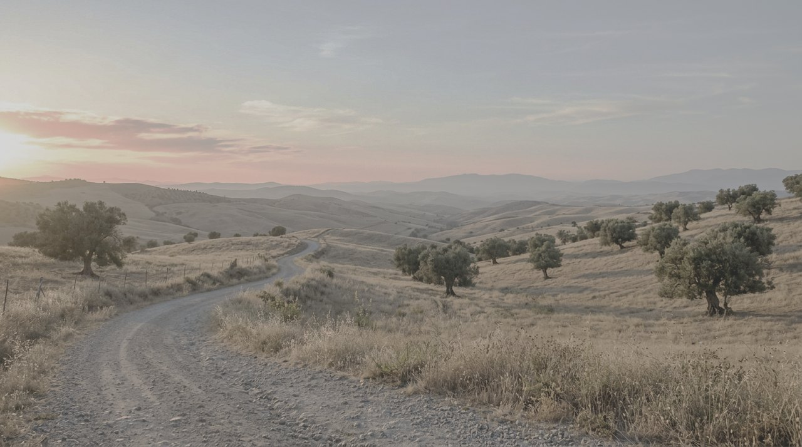
BEFORE · Log 2 AFTERNeutral concrete and glass: the test for an overall colour cast.
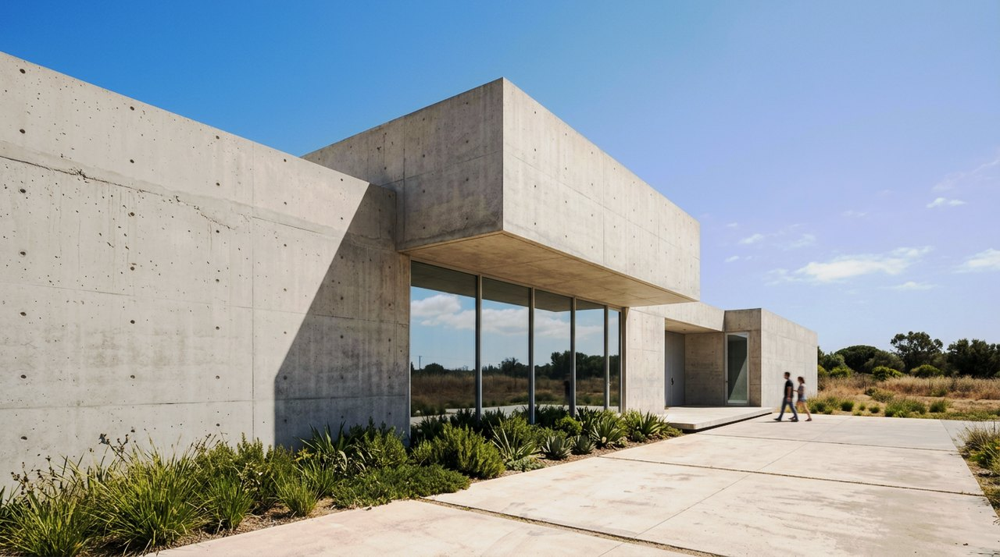
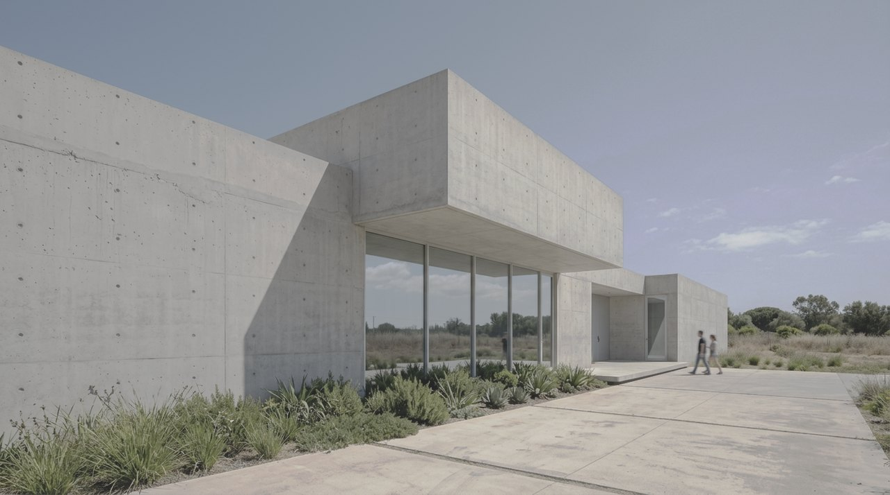
BEFORE · Log 2 AFTERMixed skin tones, half sun half shade, warm stone.
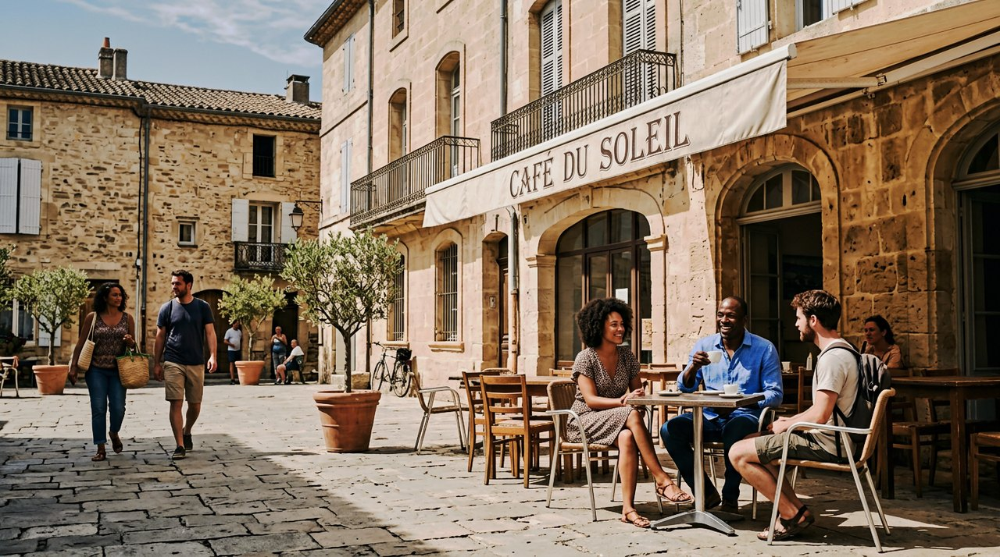
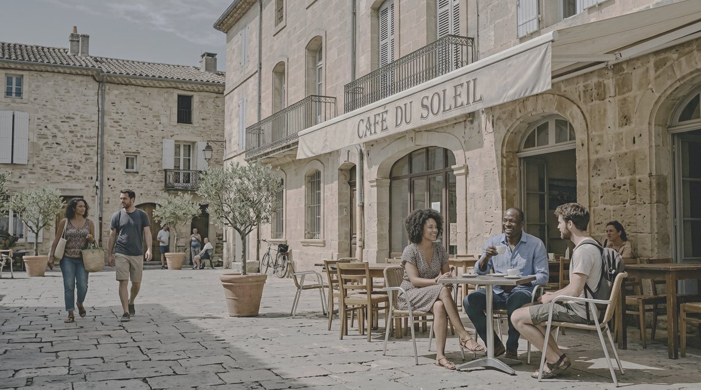
BEFORE · Log 2 AFTERAll eight scenes, before above and after below.
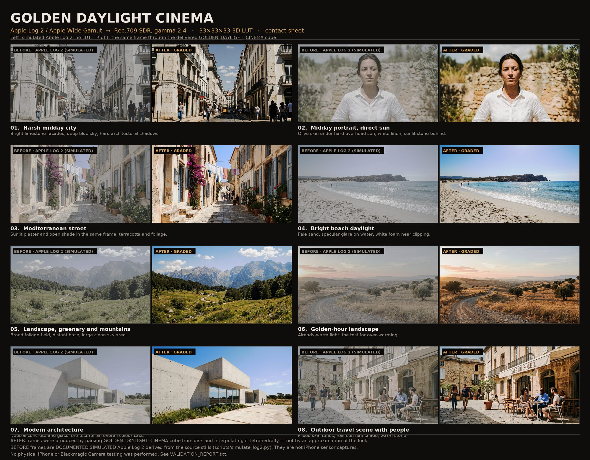
Blackmagic Camera for iOS accepts 17- and 33-point 3D .cube LUTs.
This one is 33-point for that reason.
| Input | Apple Log 2, Apple Wide Gamut, normalised full range |
|---|---|
| Output | Rec.709, gamma 2.4 (BT.1886) |
| Type | 3D .cube, 33³ = 35,937 entries |
| Camera | iPhone 17 Pro / 17 Pro Max (Apple Log 2) |
| App | Blackmagic Camera for iOS |
| Standalone | Yes — no conversion LUT needed in front |
.cube needs no unzipping; a ZIP must be extracted first.Apply as a creative look on Apple Log 2 clips with no input transform in front. In DaVinci Resolve set the clip to Apple Log 2 / Apple Wide Gamut, bypass any colour-management input transform for that node, and set the timeline to Rec.709 gamma 2.4.
The LUT is real and fully tested as a file. It passes 34 of 34 automated checks: valid 33³ syntax, no NaN or infinity, Apple Log 2 decode matching the white paper’s own anchor table to within one 10-bit code, and a re-derived Apple Wide Gamut matrix agreeing with the published OpenColorIO reference to 2.4×10⁻¹⁵.
The preview frames are simulated, not iPhone captures. No real Apple Log 2 footage was available, so the stills are AI-generated images converted into Apple Log 2 by a documented chain — inverse BT.709 OETF, highlight expansion, Rec.709 to Apple Wide Gamut, then the Apple Log encode. They do not reproduce iPhone sensor noise, demosaic or Apple’s ISP colour science.
Every AFTER image came from the delivered file. Each one is
regenerated during validation by parsing the shipped .cube and
interpolating it; all eight are bit-identical to the images on this page.
Nothing here is an approximation of the look.
No iPhone was used. No iPhone 17 Pro, no iPhone of any kind and no installation of Blackmagic Camera took part in this project. The install steps above are transcribed from current vendor documentation, not from a test. On-device appearance and import behaviour are unverified.
A LUT cannot recover clipped highlights. Where the sensor has
already clipped there is nothing to grade. Expose for the highlights. The full
measurements and caveats are in VALIDATION_REPORT.txt.
Drag to compare · arrow keys to nudge · Esc or × to close